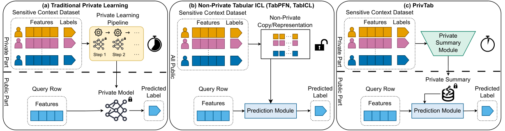
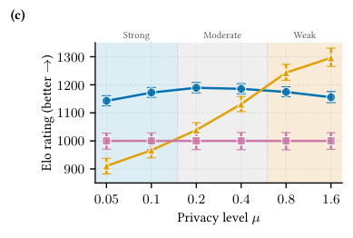
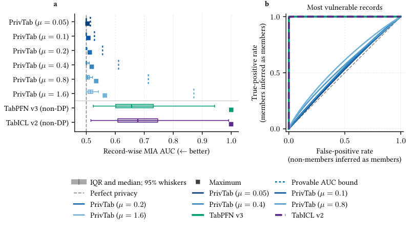

Lean 4 formalisation (DPMHCA.lean) verifies the sensitivity bound and adaptive Gaussian differential privacy composition underlying the private summary mechanism's noise calibration.
Abstract
Tabular data underpin prediction and decision-making in medicine, finance, government and science, but often contain sensitive individual-level information, creating a need for accurate prediction while preserving privacy. Traditional private learning provides formal privacy guarantees, but requires slow dataset-specific optimisation, suffers substantial utility loss under strong privacy, and is often difficult to apply correctly. Tabular foundation models adapt rapidly to new datasets, but existing models lack formal privacy guarantees, and are highly vulnerable to membership-inference attacks, limiting their use on sensitive data. Here we introduce PrivTab, an easy to use tabular foundation model for differentially private classification that embeds a privacy mechanism within its architecture. Pretrained on simulated datasets, PrivTab uses in-context learning to transform sensitive rows into compact, provably private summaries—effectively learning how to learn under privacy. PrivTab outperforms private linear and neural-network baselines under moderate-to-strong privacy, shows negligible membership leakage, maintains well-calibrated predictions under strong privacy, and reduces dataset fitting time by 10,000 times, requiring only a single forward pass. By combining formal privacy, speed, and easy of use, PrivTab brings recent advances in AI to applications where sensitive individual-level data have limited their adoption.
Problem
Tabular foundation models fit new datasets quickly but give no formal privacy guarantees and are vulnerable to membership inference. Traditional differentially private learning is slow, loses utility under strong privacy, and is hard to apply correctly.
Approach
PrivTab embeds a differentially private multi-head cross-attention (DP-MHCA) mechanism in a tabular foundation model. Learnable pseudo-tokens compress the sensitive context rows into a noisy private summary, and all later predictions are post-processing of that summary. The model is pretrained on simulated tasks across a range of privacy levels. The sensitivity bound and adaptive GDP composition used for noise calibration are formally verified in Lean 4 and complemented by empirical audits.

Figure 1 : Alternative approaches to tabular prediction from sensitive data. a , Private learning trains a new model on each sensitive dataset, requiring relatively slow dataset-specific optimisation. b , Non-private tabular learning fits new datasets in a single forward pass through in-context learning, but retains sensitive data for prediction. c , PrivTab instead releases a reusable private sum
Results
On 33 TabArena datasets, PrivTab outperforms DP logistic regression and DP-MLP baselines under moderate-to-strong privacy and fits about 10,000 times faster. On the Maternal Health Risk dataset it shows negligible membership leakage, while TabPFN v3 and TabICL v2 have highly vulnerable records.


Figure 5 : Record-level membership-inference protection. a , Distribution of the record-wise membership-inference AUC on the Maternal Health Risk dataset. For each record, we compute its AUC and 95% confidence interval, then plot the lower endpoint of that interval. Boxes show the interquartile range and median, whiskers span the central 95%, squares mark the maximum across records, and dotted ver